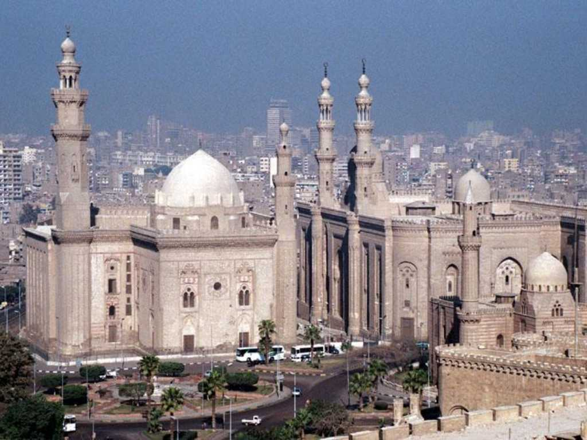

The mosque of Sultan Hassan Cairo
紀元６４０年にイスラム教徒がナイル川東岸に都市を築き１４世紀には１０００余りのミナレットが立ち並ぶ 千の塔の都と呼ばれるイスラム世界最大の都市となった スルタンハッサンモスクはピラミッドの化粧版大理石を利用して１３６３年に完成した 地中海とインド洋の交易が最盛期を向かえ金貨の輸送リスクを回避するため神の名において金貨を支払うと記された小切手の原形が流通していた